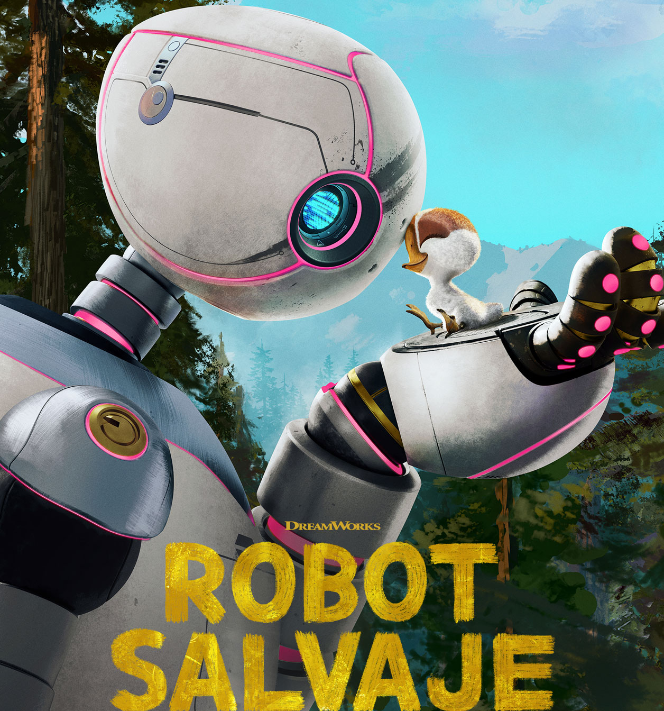

Robot salvaje

- El naufragio: Un robot inteligente conocido como ROZZUM unidad 7134 ("Roz") naufraga en una isla deshabitada y remota tras un accidente.
- Adaptación en la naturaleza: Para sobrevivir al duro entorno, Roz debe aprender a adaptarse a la naturaleza, interactuando y aprendiendo de los animales locales.
- Creación de vínculos: Roz se convierte en la madre adoptiva de un pequeño ganso huérfano, descubriendo el verdadero significado de la empatía, la conexión y la comunidad.
REGRESAR